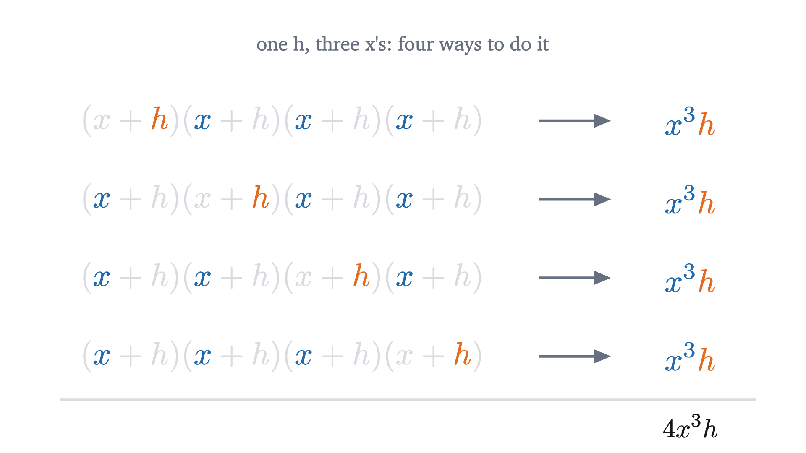
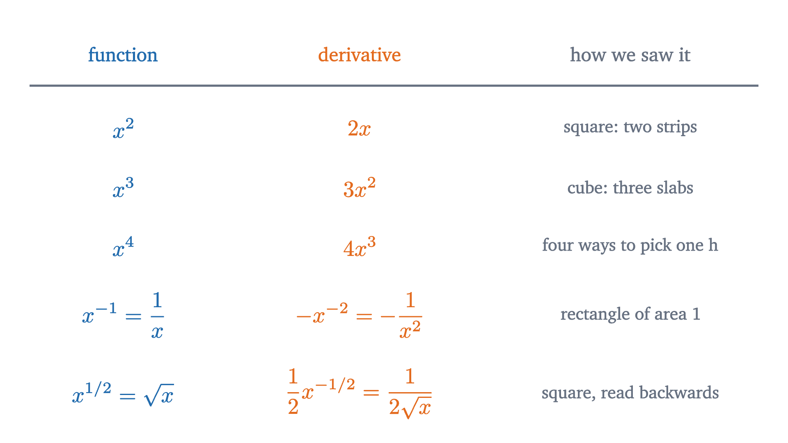

Why the derivative of x² is 2x: the power rule from pictures
A growing square gains two thin strips and a tiny corner. That picture explains the 2 in 2x, and counting the same pieces in general proves the power rule.
In the first lesson a falling ball had dropped $5t^2$ meters after $t$ seconds, and we found its speed at each instant to be $10t$ meters per second. The method was algebra: expand a square, cancel, divide by $h$, and watch one leftover term shrink to nothing.
That algebra is correct, and it explains very little. A square went in and a doubling came out, and nothing in the calculation says why, or what to expect if the square is replaced by a cube or a tenth power. Where does the 2 in $2x$ come from?
It can be seen, because $x^2$ is something you can draw. The picture that explains the 2 also predicts the derivative of $x^3$, and once we know what the picture is counting, the same count can be carried out for $x^n$, where no picture is available. That count is the proof of the power rule.
A square that grows
Recall the definition. For a function $f$ and a number $a$, the difference quotient is $\frac{f(a+h) - f(a)}{h}$, the change in the output divided by the change $h \neq 0$ in the input, and the derivative $f'(a)$ is its limit as $h$ approaches 0, when that limit exists: the rate at which the output changes, per unit of input, at the single input $a$.
Take $f(x) = x^2$ and read it as the area of a square whose side is $x$. The difference quotient then has a concrete meaning: grow the side by $h$, measure how much area was gained, and divide the gain by $h$.
Start with a square of side 3, which has area 9, and grow the side by 1. The area becomes 16, so the gain is 7. The animation above shows where those 7 units sit: a strip 3 long and 1 wide along the right edge, an identical strip along the top, and a 1 by 1 square in the corner where they meet. The gain is $3 + 3 + 1 = 7$, and the difference quotient is $7 / 1 = 7$.
Pause and try
Now grow the side of the same square by $0.1$ instead, from 3 to 3.1. Without multiplying out $3.1^2$, use the three pieces to find the gain in area and the difference quotient. Then check your gain against $3.1^2$.
Show answerHide answer
Each strip is 3 long and $0.1$ wide, so the two strips add $2 \times 3 \times 0.1 = 0.6$. The corner is $0.1 \times 0.1 = 0.01$. The gain is $0.61$, and indeed $3.1^2 = 9.61$. The difference quotient is $0.61 / 0.1 = 6.1$.
The next figure repeats that computation for smaller and smaller growths.
The last line of the readout is the difference quotient, the area gained per unit of side added. It comes out as 7, then 6.5, then 6.1, then 6.01, so the derivative of $x^2$ at $x = 3$ should be 6, which is what the first lesson found from the definition.
The picture adds an account of where the 6 comes from. At every step the two strips contribute exactly $2 \times 3 \times h$ to the gain, which is 6 per unit of $h$. The corner contributes the rest: 1, then 0.5, then 0.1, then 0.01 per unit of $h$.
Why the corner does not count
Nothing in that description depended on the side being 3. Let the side be $x > 0$ and the growth be $h > 0$. Each strip is $x$ long and $h$ wide and the corner is $h$ by $h$, so
Each term is now attached to a piece of the picture: $2xh$ is the pair of strips and $h^2$ is the corner. To see the rate, cut the three pieces loose and lay them in a row.
Dividing an area by its thickness gives a length, and that is what the difference quotient does to this bar:
The $2x$ is the length of the bar, and the extra $h$ is the length the corner adds to it. As $h \to 0$ the corner’s contribution goes to 0 and the quotient has limit $2x$.
You might object that the strips shrink as well: at $h = 0.01$ they are hairlines, so why should they survive in the limit when the corner does not? The difference quotient measures gain per unit of $h$, and the two kinds of piece respond differently when $h$ is made smaller. A strip is thin in one direction only, so halving $h$ halves its area and leaves its area divided by $h$ unchanged. The corner is thin in two directions, so halving $h$ quarters its area and halves its area divided by $h$. Repeating this drives the corner’s share of the quotient to zero while the strips’ share stays at $2x$.
One gap has to be closed before we rely on the picture. The definition of the derivative takes a limit over negative $h$ as well as positive, and $x^2$ is defined for negative $x$ too, while the picture showed only a positive side growing. But the identity $(x+h)^2 - x^2 = 2xh + h^2$ is true for all real $x$ and $h$. The picture tells us which identity to look for and what its terms mean, and the identity does the proving.
This also accounts for the ball. Its distance $5t^2$ is the combined area of five squares of side $t$. Each gains area at the rate $2t$, so the five together gain at the rate $10t$.
A cube that grows
The next power is $x^3$, the volume of a cube of side $x$. Take a cube of side 2, with volume 8, and grow every side by $h$.
Pause and try
Before looking at the figure, picture the grown cube with the old cube inside it, pushed into one corner. The new material can be cut into flat slabs, thin rods and one tiny cube. How many slabs and how many rods are there, what are the dimensions of each, and which pieces will still matter in the difference quotient as $h \to 0$?
Show answerHide answer
There are three slabs, one against each of the three faces of the old cube that are not pushed into the corner, and each measures $2 \times 2 \times h$. There are three rods, one along each edge where two slabs meet, each $2 \times h \times h$. The last piece is a corner cube, $h \times h \times h$. Only the slabs are thin in a single direction, so only they survive division by $h$: their contribution to the rate is $3 \times 2 \times 2 = 12$.
With $h = 0.1$ the gain of $2.1^3 - 8 = 1.261$ splits into $1.2$ from the slabs, $0.06$ from the rods and $0.001$ from the corner, and the difference quotient is $12.61$. Everything above 12 comes from pieces that are thin in two or three directions.
In letters, each slab has volume $x^2 h$, each rod $x h^2$, and the corner $h^3$, so
Dividing by $h$ gives $3x^2 + 3xh + h^2$. The last two terms still carry a factor of $h$ and have limit 0, so the derivative of $x^3$ is $3x^2$: three slabs, each with a face of area $x^2$.
The pattern, without a picture
So far we have
and the obvious guess for $x^4$ is $4x^3$. A four-dimensional cube is hard to draw, so to test the guess we have to work out what the picture was doing for us and do that directly.
A slab was thin in exactly one of the cube’s directions and full-sized in the others, and a cube has three directions, which is why there were three slabs. Algebra records the same count. Write the grown volume as a product with one bracket for each direction:
Multiplying this out means taking either the $x$ or the $h$ from each bracket, multiplying the four choices together, and adding up the results over all $2^4 = 16$ ways of choosing. If you take $x$ from every bracket you get $x^4$, which is the old cube. If you take $h$ from exactly one bracket and $x$ from the other three you get $x^3 h$, which is a slab: thin in one direction, full-sized in three.
Pause and try
How many of the 16 choices take $h$ from exactly one bracket? How many take $h$ from exactly two? Use your counts to write out $(x+h)^4$ in full, and check it at $x = 1$, $h = 1$.
Show answerHide answer
The single $h$ can come from any of the 4 brackets, so there are 4 such choices, contributing $4x^3h$. Two $h$’s can come from 6 pairs of brackets, contributing $6x^2h^2$. Three $h$’s means choosing the one bracket that gives $x$, so $4xh^3$, and one choice gives $h^4$. Altogether $(x+h)^4 = x^4 + 4x^3h + 6x^2h^2 + 4xh^3 + h^4$. At $x = h = 1$ both sides are 16.

Every one of the remaining eleven choices takes $h$ from two or more brackets, so each has a factor of $h^2$. Those are the four-dimensional rods and corners, and we can write
Dividing by $h$ leaves $4x^3$ plus $h$ times a polynomial, and the second part has limit 0. The derivative of $x^4$ is $4x^3$, as guessed.
Nothing in the argument was special to 4. With $n$ brackets there are $n$ ways to choose the bracket that supplies the single $h$, each giving $x^{n-1}h$, and everything else has a factor of $h^2$. The exponent comes down in front because it counts the slabs. The power drops by one because a slab has traded one of its factors of $x$ for an $h$, and the division by $h$ removes that factor.
The power rule, stated and proved
Here is the statement as a textbook would give it. Its proof is the counting argument with the limit checked carefully.
“Every real number $a$” includes negative numbers and zero, for which there is no cube to draw, and the proof will not need one. “Differentiable” asserts that the limit of the difference quotient exists, which is the claim that the rods and corners fade. For $n = 1$ the formula reads $1 \cdot a^0 = 1$, with the convention that $a^0 = 1$ for every $a$.
On its own this theorem differentiates single powers. Two simple facts extend it to every polynomial.
In the pictures, gains add, and five squares gain five times what one does, which is how we handled the ball. A constant function has derivative 0, since its difference quotient is $\frac{c - c}{h} = 0$ for every $h \neq 0$.
Does the rule work for other powers?
The counting proof needs $n$ brackets, so it only speaks for positive whole numbers. But the expression $n x^{n-1}$ makes sense for other values of $n$, so we can ask whether the rule stays true.
Try $n = -1$. Since $x^{-1}$ means $1/x$, the rule would predict the derivative $(-1) \cdot x^{-2} = -1/x^2$, which is $-0.25$ at $x = 2$.
There is no cube here, but a rectangle of width $x$ and area 1 must have height $1/x$. If it is made wider while its area is held at 1, its height has to come down, and we want to know how fast.
Because the area did not change, the area gained on the right must equal the area given up on top. Suppose the width grows from $x$ to $x + h$ and the height drops by $k$. The strip on the right is $h$ wide and as tall as the new height, which is $\frac{1}{x+h}$. The strip on top is $x$ wide and $k$ tall. Setting the two areas equal,
The left side is the drop in height per unit of added width, which is the difference quotient of $1/x$ with its sign reversed. As $h \to 0$ the product $x(x+h)$ approaches $x^2$, so the height falls at the rate $1/x^2$.
At $x = 2$ that is $0.25$, as predicted; the figure’s large step $h = 0.5$ gave $0.1 / 0.5 = 0.2$.
The picture needs positive $x$ and $h$, but the equation it produced is the algebra of the first lesson, where the difference quotient of $1/x$ at any $a \neq 0$, for $h$ of either sign, was found to be $-\frac{1}{a(a+h)}$, with limit $-\frac{1}{a^2}$. So $1/x$ is differentiable at every $a \neq 0$ with derivative $-1/a^2$, and the rectangle explains the form of the answer: one factor of $\frac{1}{x}$ is the height of the strip gained, and the other comes from spreading the loss along a top edge of length $x$.
Now try $n = \frac{1}{2}$. Since $x^{1/2}$ means $\sqrt{x}$, the rule would predict $\frac{1}{2}x^{-1/2}$, which is $\frac{1}{2\sqrt{x}}$.
For this one, read the growing square in the other direction. Before, we chose the side and asked about the area. Now choose the area $A$ and ask about the side $s = \sqrt{A}$. If the side grows by $k$, the area grows by two strips and a corner, $2sk + k^2 = k(2s + k)$. So an added area of $h$ produces a growth $k$ in the side with
As the added area shrinks, so does $k$, and the quotient approaches $\frac{1}{2s} = \frac{1}{2\sqrt{A}}$, which is what the rule predicted. The numbers from the start of the lesson fit. Growing the area from 9 to 9.61 moved the side from 3 to 3.1, a quotient of $0.1 / 0.61 \approx 0.164$, and the prediction at $A = 9$ is $\frac{1}{6} \approx 0.167$.
A large square has long strips, so the same added area makes a thinner layer.
The hypothesis $a > 0$ cannot be dropped. At $a = 0$ the difference quotient is $\frac{\sqrt{h}}{h} = \frac{1}{\sqrt{h}}$ for $h > 0$, which grows without bound as $h \to 0$, so $\sqrt{x}$ has no derivative at 0.
How far the rule reaches

We have now proved every row: the first three by the counting theorem, and the last two by separate arguments that each produced the same formula $n x^{n-1}$. The general fact behind the agreement is this.
This lesson has not proved that statement. It is quoted. What has been proved here is the rule for positive whole exponents (at every real $a$), for $r = -1$ and for $r = \frac{1}{2}$, and Problems 5 and 7 add $r = -2$ and $r = \frac{1}{3}$ by the same methods. A general rational exponent needs the chain rule, and a problem in the next lesson derives the formula that way. For an irrational exponent such as $x^{\sqrt{2}}$, even the meaning of the expression has to be defined first, through the exponential function and the logarithm, and the proof uses those functions together with the chain rule. Until then the general rule is a cited theorem.
The restriction to $x > 0$ is there because many powers are undefined elsewhere: $x^{1/2}$ has no real value for negative $x$, and $x^{-1}$ has no value at 0.
What to keep
The first lesson’s difficulty was defining a rate at an instant through a limit. This one’s is knowing what the limit throws away. When a quantity grows, its gain arrives in pieces, some small in one direction and some small in two or more, and a rate only registers the first kind. The proofs above were all ways of showing that the other pieces are at most a constant times $h^2$.
The next lesson applies the same idea to a rectangle whose two sides are different functions of $x$, and the strips of that rectangle give the rule for differentiating a product.
Check yourself
What is the derivative of $x^5$ at $x = 2$?
Problems
Work these on paper before opening the solutions. The first two repeat the moves of the lesson, the next three combine them or ask for a reason, and the last two go beyond it.
Problem 1
Differentiate each function: (a) $x^7$; (b) $3x^4 - 2x + 9$; (c) $\dfrac{6}{x} + 4\sqrt{x}$ for $x > 0$.
Show solutionHide solution
(a) $7x^6$. (b) Term by term, $3 \cdot 4x^3 - 2 \cdot 1 + 0 = 12x^3 - 2$. (c) Rewrite as $6x^{-1} + 4x^{1/2}$. Then the derivative is $6 \cdot (-1)x^{-2} + 4 \cdot \frac{1}{2}x^{-1/2} = -\dfrac{6}{x^2} + \dfrac{2}{\sqrt{x}}$.
Problem 2
A square of side 5 has its side increased to $5.02$. Find the gain in area from the strips and the corner separately. What does the tangent-line estimate $5^2 + 2 \cdot 5 \cdot h$ give for $5.02^2$, and how large is its error?
Show solutionHide solution
The two strips have area $2 \times 5 \times 0.02 = 0.2$, and the corner has area $0.02^2 = 0.0004$. So $5.02^2 = 25 + 0.2 + 0.0004 = 25.2004$. The estimate $25 + 10h = 25.2$ keeps the strips and drops the corner, so its error is exactly the corner, $0.0004$.
Problem 3
Find the tangent line to $y = x^3$ at the point $(2, 8)$. Then find every point where that line meets the curve. What does the result say about the idea that a tangent line “touches the curve only once”?
Show solutionHide solution
The slope is $3x^2 = 12$ at $x = 2$, so the tangent line is $y = 8 + 12(x - 2) = 12x - 16$. It meets the curve where $x^3 = 12x - 16$, that is, $x^3 - 12x + 16 = 0$. Since the line is tangent at $x = 2$ we expect a double root there, and indeed $(x-2)^2(x+4) = (x^2 - 4x + 4)(x + 4) = x^3 - 12x + 16$. So the line meets the curve at $x = 2$ and again at $x = -4$, at the point $(-4, -64)$; check: $12(-4) - 16 = -64$. A tangent line is defined by its slope at the point of tangency, and nothing prevents it from crossing the curve somewhere else.
Problem 4
The area of a circle of radius $r$ is $\pi r^2$, so by the power rule its derivative with respect to $r$ is $2\pi r$, which is the circumference. Explain this with a picture in the style of the growing square: what is gained when the radius grows by $h$, and what plays the role of the corner?
Show solutionHide solution
When the radius grows from $r$ to $r + h$ the circle gains a ring of width $h$. Its exact area is $\pi(r+h)^2 - \pi r^2 = 2\pi r h + \pi h^2$. The first term, $2\pi r h$, is a strip as long as the old circumference and $h$ wide: the ring cut and straightened. The second term, $\pi h^2$, is the extra area that comes from the outer edge being longer than the inner one. It is small in two directions, like the corner of the square, and after division by $h$ it becomes $\pi h$, which has limit 0. So the rate is the circumference: area is added along the boundary.
Problem 5
Prove from the definition that $f(x) = \dfrac{1}{x^2}$ has derivative $f'(a) = -\dfrac{2}{a^3}$ at every $a \neq 0$. (You may use the limit laws for sums, products and quotients.) Check that this agrees with the power rule for $r = -2$.
Show solutionHide solution
For $h \neq 0$ with $a + h \neq 0$,
Dividing by $h$, the difference quotient is $-\dfrac{2a + h}{a^2(a+h)^2}$. As $h \to 0$ the numerator has limit $2a$ and the denominator has limit $a^2 \cdot a^2 = a^4 \neq 0$, so by the limit laws the quotient has limit $-\dfrac{2a}{a^4} = -\dfrac{2}{a^3}$. The power rule with $r = -2$ gives $-2a^{-3}$, the same thing.
Problem 6
Find the error in this argument. “For a whole number $x$, $x^2 = x + x + \cdots + x$, with $x$ terms. The derivative of each term is 1, so the derivative of the sum is $1 + 1 + \cdots + 1$ with $x$ terms, which is $x$. Hence the derivative of $x^2$ is $x$, not $2x$.”
Show solutionHide solution
The rule for differentiating a sum term by term applies to a fixed number of terms. Here the number of terms is $x$, which changes when $x$ changes, and the argument ignores that change. (It also treats $x$ as a whole number, which leaves no room for a limit.) Count the change honestly: when $x$ increases by $h$, each of the $x$ existing terms increases by $h$, contributing $x \cdot h$, and there are also $h$ new terms, each of size about $x$, contributing another $x \cdot h$. The total is $2xh$. These are exactly the two strips of the growing square: one from every row getting longer, and one from there being more rows.
Problem 7
Adapt the square-root proof to find the derivative of $f(x) = x^{1/3}$ at a point $a > 0$. Start from a cube instead of a square: write $u = (a+h)^{1/3}$ and $v = a^{1/3}$, and use the identity $u^3 - v^3 = (u - v)(u^2 + uv + v^2)$. You may assume that the cube root is continuous, so that $u \to v$ as $h \to 0$. Does your answer agree with the power rule?
Show solutionHide solution
Since $u^3 = a + h$ and $v^3 = a$, the identity gives $h = (u - v)(u^2 + uv + v^2)$. For $a > 0$ and $|h| < a$ both $u$ and $v$ are positive, so the second factor is positive, and
As $h \to 0$, $u \to v$, so the denominator has limit $3v^2 = 3a^{2/3}$, which is not zero. By the limit law for quotients, $f'(a) = \dfrac{1}{3a^{2/3}} = \tfrac{1}{3}a^{-2/3}$. The power rule with $r = \frac{1}{3}$ predicts $\frac{1}{3}a^{\frac{1}{3} - 1} = \frac{1}{3}a^{-2/3}$, in agreement.